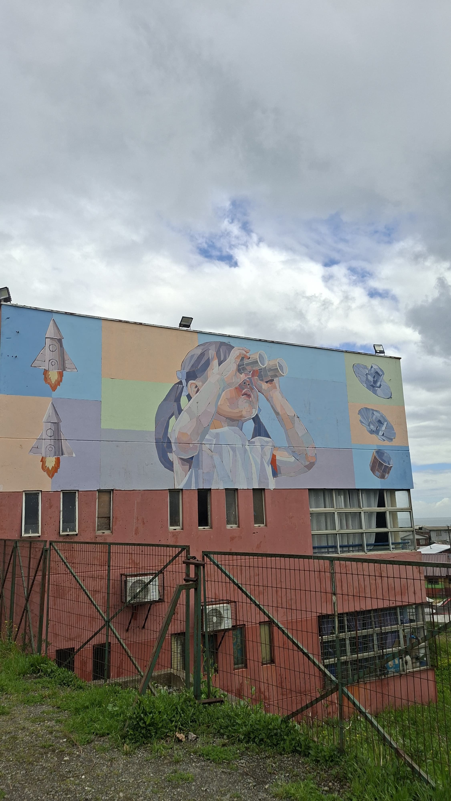
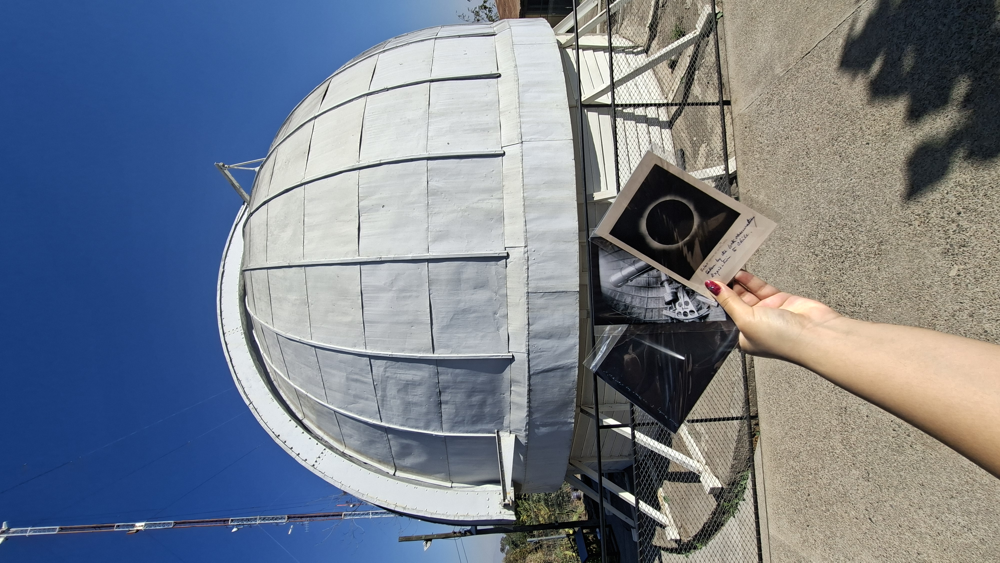

Outreach
Besides research, I enjoy communicating science to a general audience, through student organized workshops, public talks and initiatives focused on highlighting the role of women in STEM.
“Un viaje por el universo”

Talk given with Daniela Barrios (UDP) and Ivanna Hernández (PUC) on behalf of Phylogal at the first "Congreso Científico Astronómico", organized by Escuela Bello Horizonte. October 2026, Lota, Concepción, Chile. See more here
Observatorio Manuel Foster

Since April of 2026, I have been part of the Manuel Foster Observatory team, providing guided tours in Spanish and English for the general public. Come visit us at Cerro San Cristóbal!